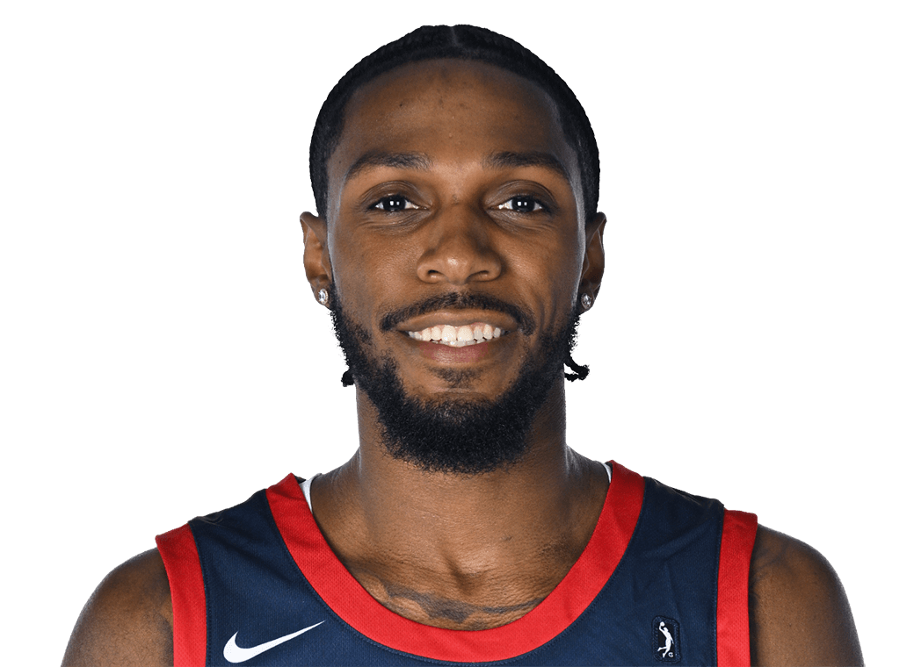

MAR 22, 2025 · RIP CITY REMIX
The all-around impact game
14 AST · 9 REB · 5 STL · 8 PTS
Six offensive rebounds and three turnovers. Playmaking, guard rebounding and defensive disruption in one performance.
Review game highlights ↗Point-of-attack defender. Playmaker. Rebounder. Connector.
Seeking his next professional playing opportunity.

When I asked Jordan which NBA players he studies, he didn't name the usual scoring stars. He named Kris Dunn, Alex Caruso, Josh Hart and Gary Payton II.
That tells you how he sees his job: defend, rebound, connect teammates and win the next possession. Jordan calls it being a “piano mover” — doing the hard work that helps the other four players succeed.
Six offensive rebounds and three turnovers. Playmaking, guard rebounding and defensive disruption in one performance.
Review game highlights ↗Organized the offense and created opportunities for teammates.
Game logs ↗Start with Jordan's San Diego Clippers highlights. Then see three key possessions that show his impact beyond the box score. Explore the rest only if you want more.
Three short sequences from Jordan's professional film. Watch the effort, decisions and continuation — not just the result.
8 seconds · Follow the defensive sequence into the next action.
16 seconds · Stay engaged from the setup through the next action.
9 seconds · Watch the complete offensive sequence.
More game footage, college highlights and player stories. The featured Clippers season film is above.
Jordan's March 22, 2025 performance against Rip City Remix: 8 points, 9 rebounds, 14 assists, five steals per the post and RealGM. Role reference: playmaking and possession impact.
Open original X post ↗Jordan's Morehead State senior-season highlight compilation. Supports evaluation of complementary offense and versatility, with college-level context.
Open original video ↗Highlights from Morehead State's 69–68 loss at Indiana, when Jordan scored 30 points. A look at Jordan’s ability to score against Big Ten competition.
Open original video ↗The supplied screenshot highlights ball handling, perimeter shooting, offensive rebounding and finishing. Watch the original clip for ball handling, perimeter shooting, rebounding and finishing.
Open original video ↗Linked to the additional college footage you identified in screenshots 4 and 5. Additional college footage from Jordan’s playing career.
Open original video ↗Verified video title: Jordan hit the buzzer-beating baseline jumper as UTEP beat Rice 65–64. Historical clutch-scoring example.
Open original video ↗Jordan and a college coach reflect on his senior-year journey, development and time with the Eagles. A window into his competitive mentality, team-first attitude and development.
Open original video ↗Team-authored recap celebrating Jordan's first San Diego season, referencing a team-high 14 assists and a double-double. Some footage may overlap with other entries.
Open original X post ↗Short clips organized by basketball action. All footage features Jordan Lathon.
Additional G League performances and full career splits for a deeper evaluation.
Scoring and defensive activity in 27:36.
Review game log ↗9/17 shooting from the field and 2/4 from three. Scored efficiently when called upon.
Review game highlights ↗One career timeline, with the numbers, teams and key moments together.
Select a season to explore ↓
Professional debut with San Diego. Signature outings included 14 assists, nine rebounds and five steals against Rip City, and 18 points with three steals, two blocks and zero turnovers against Capital City. See signature games ↓
*Season figures shown across the regular season and Showcase Cup; not one official competition split. Statistical record ↗ · NBA G League profile ↗
Helped lead Grandview to the Missouri Class 4 state title. Scored 24 points in the 81–63 championship win over Raytown South. Rated No. 137 nationally in the 2018 class by Rivals.
A defined complementary role, professional film and clear next steps for a workout or evaluation.
Jordan is a 6'5" connective guard who can support a lead creator, move the ball, rebound and compete for extra possessions. His March 22 performance against Rip City featured 14 assists, nine rebounds and six offensive boards. His contributions don't have to start with a shot attempt.
Explore his all-around game ↗Jordan reports experience defending positions 1–4. On the professional level, he recorded five steals against Rip City and three steals with two blocks against Capital City. His game film provides the best look at his positioning, activity and matchup versatility.
Watch professional film ↗His professional highlights include 20 points against Rip City and 18 against Capital City. At Morehead State, he averaged 15.6 points in 2023–24 and scored 30 against Indiana.
See his signature games ↗His 14-assist, three-turnover game against Rip City offers a starting point. Jordan also reports a 13-point, 12-assist performance against Sioux Falls; its box score is being reconciled before publication as verified. Watch how he handles tempo, finds cutters and plays alongside other creators.
Start with his G League highlights ↗Jordan has shared encouraging coaching feedback about his approach and development. Specific references can be discussed through an approved introduction. The Morehead State senior reflections video also offers a window into his playing journey.
Explore his player story ↗Jordan is an unrestricted free agent, according to his current status confirmation, and is available for a G League conversation. Start with his professional highlights and four featured performances, then discuss full-game footage, a workout or a conversation with his coaching references.
Discuss the next opportunity ↗What is Jordan like to play alongside? A firsthand teammate observation will be added after the conversation and approval.
What role did Jordan earn in practice and games? A direct coaching perspective will be added when available for publication.
For coaches, scouts and professional teams evaluating Jordan for his next playing opportunity. Connect through Jordan’s approved professional contact once listed.
PROFESSIONAL CONTACT DETAILS PENDINGTHE PIANO MOVER
Professional basketball · Guard
POINT-OF-ATTACK DEFENDER · CONNECTIVE GUARD · POSSESSION WINNER. Know the role. Win the possession. Jordan calls his approach “The Piano Mover”: defend, communicate, rebound and connect teammates without needing to be the primary scorer.
2024–25 source portfolio line. Season-phase scope requires reconciliation; reference the linked statistical profile.
Recent full-game film and a role discussion. Evaluate shooting consistency, defensive assignments and contributions away from the ball.
Current availability and playing rights: confirm directly.
Profile: irvinthev.github.io/BasketballAgent_J2/
Stats: RealGM statistical profile · Game logs: RealGM · Jordan Lathon game logs